作业系统¶
作业系统
Slurm系统简介¶
在公共集群中使用SLURM作业调度系统进行任务的调度和管理。SLURM （SimpleLinux Utility for Resource Management）是一种可用于大型计算节点集群的高度可伸缩和容错的集群管理器和作业调度系统，被世界范围内的超级计算机和计算集群广泛采用。
Slurm常用命令¶
sinfo |
查看节点与分区状态 |
squeue |
查看队列状态 |
scancel |
取消作业 |
sacct |
查看历史作业信息 |
salloc |
分配资源 |
sbatch |
提交批处理作业 |
scontrol |
系统控制 |
srun |
执行作业 |
日常使用超算资源只需掌握简单的几条命令即可，具体详细的配置请参考 SLURM官方文档
查询状态¶
sinfo：查看节点与分区状态
1 2 3 4 | |
PARTITION |
分区名，又称队列，对节点的逻辑分组。不同的分区会设置不同权限、资源限制等。 |
AVAIL |
可用状态：up 可用；down 不可用 |
TIMELIMIT |
该分区的作业最大运行时长限制, 30:00 表示30分钟，如果是2-00:00:00表示2天，如果是infinite表示不限时间 |
NODES |
节点数量 |
STATE |
状态：drain:排空状态，表示该类节点不再分配到其他；
idle: 空闲状态；
alloc: 被分配状态; mix:部分被占用，但是仍有可用资源；
down停机 |
{kind=link}
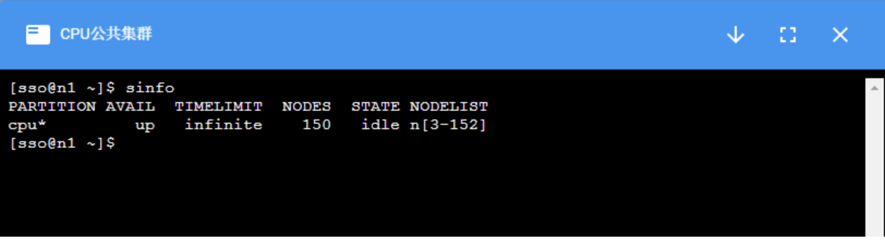
squeue：查看队列状态
1 2 3 4 5 6 7 8 9 10 11 | |
| 关键词 | 含义 |
JOBID |
作业的id号，每个成功提交的任务都会有唯一的id |
PARTITION |
分区名 |
NAME |
作业名称，默认为提交脚本的名称 |
USER |
用户名，提交该作业的用户名 |
ST |
作业状态：PD排队；R运行；S挂起；CG正在退出 |
TIME |
作业运行时间 |
NODES |
作业占节点数 |
NODELIST(REASON) |
作业所占节点列表，如果是排队状态的任务，则会给出排队原因 |
{kind=link}
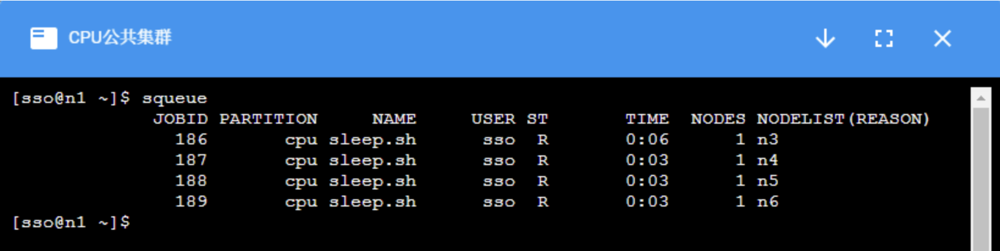
scancel：取消作业
{kind=link}
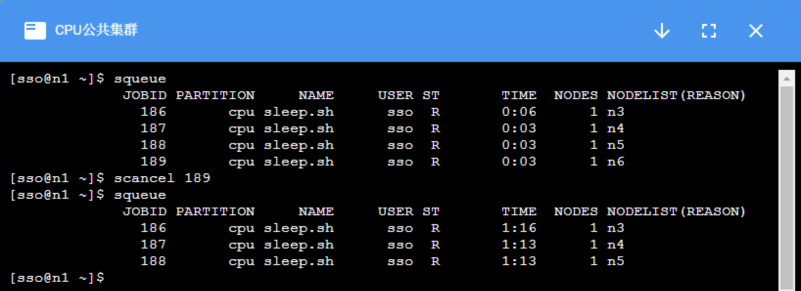
作业性能监控¶
在”作业“页面点击作业查看作业详情，进入”性能监控“
{kind=link}
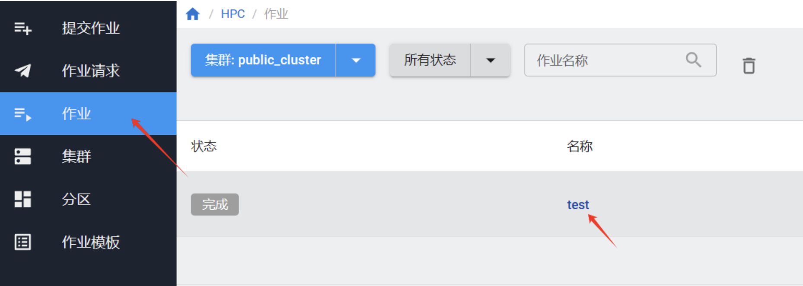
{kind=link}
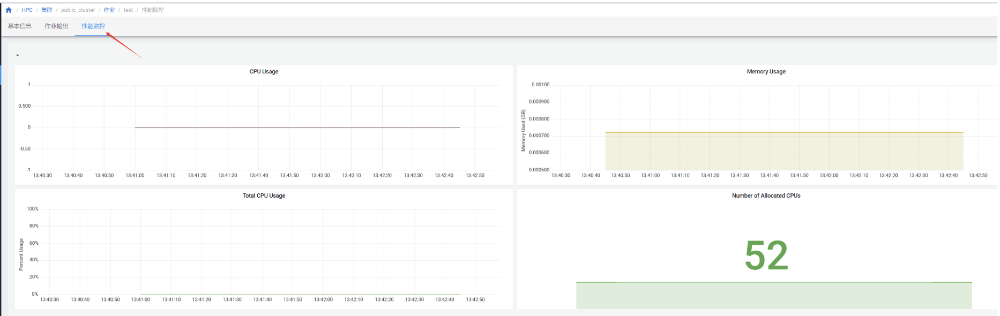
Slurm作业提交¶
系统支持WEB页面提交作业以及终端提交作业。
系统页面提交
系统支持直接在页面提交作业。
⚠️注意
在提交作业前，请先到“集群”-“分区”页面查看集群的不同队列资源情况。 如果有不止一个队列，请根据队列的资源配置情况，在作业脚本中加上队列参数--partition=<names> 。
点击上方集群，选择“提交作业”。
{kind=link}
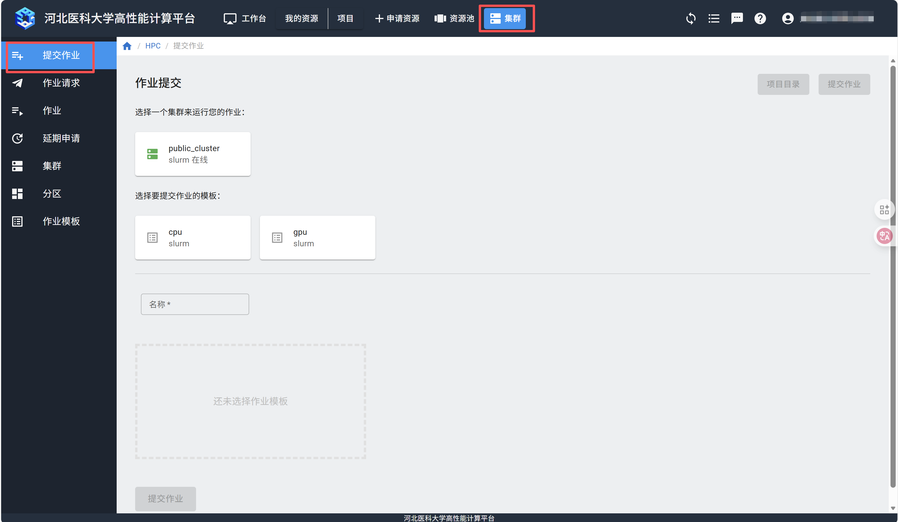
选择需要使用的集群和作业模板，填写作业名称，在脚本编辑器里填入作业脚本，点击右上方的“提交作业”按钮。
{kind=link}
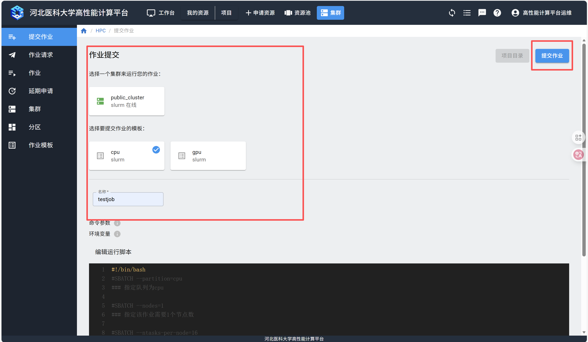
提交作业后，可以在“作业”页面查看是否提交成功。
{kind=link}
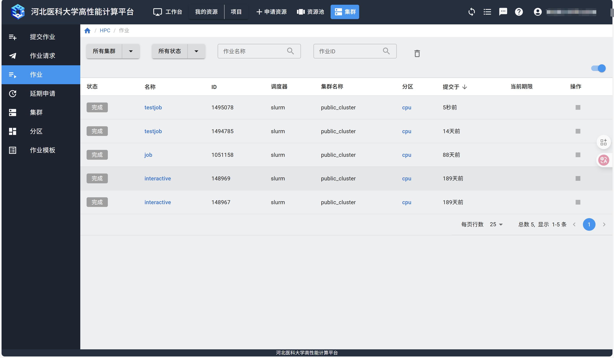
如果提交的作业有输出，需要下载，等待作业运行完成后，点击作业名称，进入作业详情。
{kind=link}
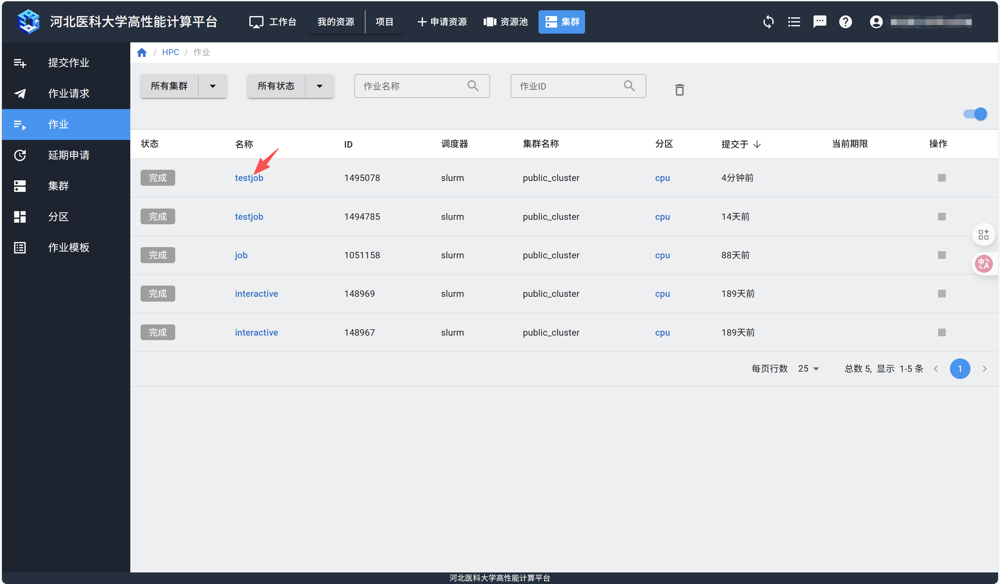
在“作业输出”页面，点击“下载输出日志”。
{kind=link}
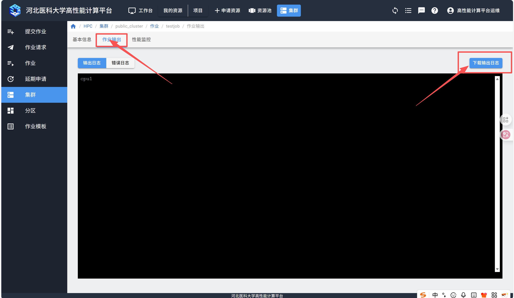
终端提交
Slurm作业通常分为交互式和批量式两种。交互式作业通常用于代码编译、脚本调试、交互式计算等工作。长期后台计算的任务通常以作业脚本的方式进行批量提交。
交互作业
警告
集群的登录节点设置有资源限制，请勿在登录节点进行大量计算。
集群的计算节点默认不允许用户直接登录，对需要交互式处理的程序，在登录到集群后，使用salloc命令分配节点，然后再ssh到分配的节点上进行处理：
{kind=link}
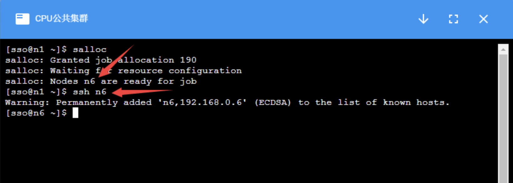
计算完成后，使用:cmd:exit 命令退出节点，注意需要:cmd:exit 两次，第一次exit是从计算节点退出到登录节点，第二次 exit 是释放所申请的资源。
{kind=link}
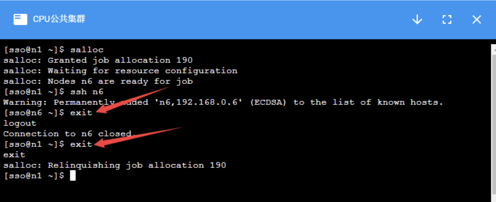
批量作业
可以通过将程序执行命令放入作业提交脚本，并通过 sbatch 命令作业提交的方式在集群中进行计算。
一个简单的脚本示例如下：
1 2 3 4 5 6 7 8 9 10 11 12 13 14 15 16 17 18 19 20 | |
上述中 ### 为注释行。
第一行表示这是一个bash脚本，第4-17行以 #SBATCH 开头的命令表示这些是需要slurm系统处理的参数。
如下图所示，通过 sbatch+作业脚本名 提交作业，系统会返回作业编号，通过 squeue 命令可以看到作业运行状态，等作业执行完成后，默认会把程序的输出放到 slurm-作业编号.out 的文件中，可通过该文件查看程序的输出。
GPU集群作业提交
如果是GPU集群，需要在作业脚本中增加 --gres=gpu:<number of card> 参数。例如 #SBATCH --gres=gpu:2，意味着指定2张GPU卡数。
以下为GPU作业的一个示例：
1 2 3 4 5 6 7 8 9 10 11 12 13 14 15 16 17 18 19 20 21 22 23 24 25 26 | |
⚠️注意
GPU集群中提交作业时，需要在srun或 sbatch命令中增加参数-s，或者--oversubscribe。表示允许与其它作业共享资源。
例如：
$sbatch -s job.sh
如果要在GPU集群中使用Nvidia指令，请参考
常见提交作业参数参考
| 参数 | 说明 |
--jobname= |
设定作业名称 |
--nodes= |
设定作业需要的节点数。如果没有指定，默认分配足够的节点来满足--ntasks=和--cpus-per-task=参数的要求。 |
--ntasks-per-node= |
设定每个节点上的任务数。要和--nodes=同时配合使用。 |
--ntasks= |
设定最多启动的任务数。 |
--cpus-per-task= |
设定每个任务所需要的CPU核数。如果没有指定，默认为每个任务分配一个CPU核。一般运行OpenMP等多线程程序时需要，普通MPI程序不需要。 |
--gres=gpu:n |
设定需要使用的GPU卡数量 |
--comment projectName |
设定需要扣费的项目账户，将projectName替换为项目名称。如果项目名称错误，作业会提交失败。 |
参考资料¶
1. Slurm作业系统 ↗